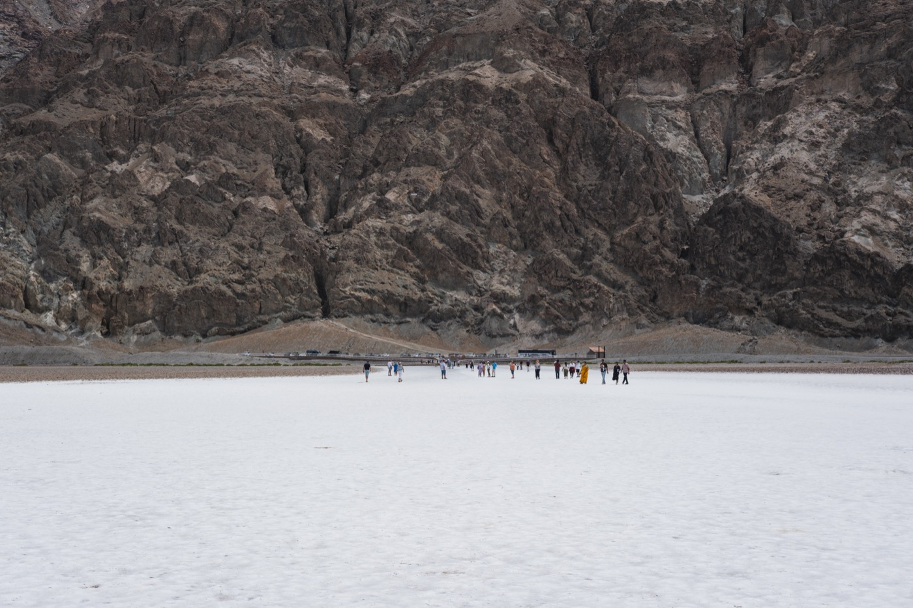
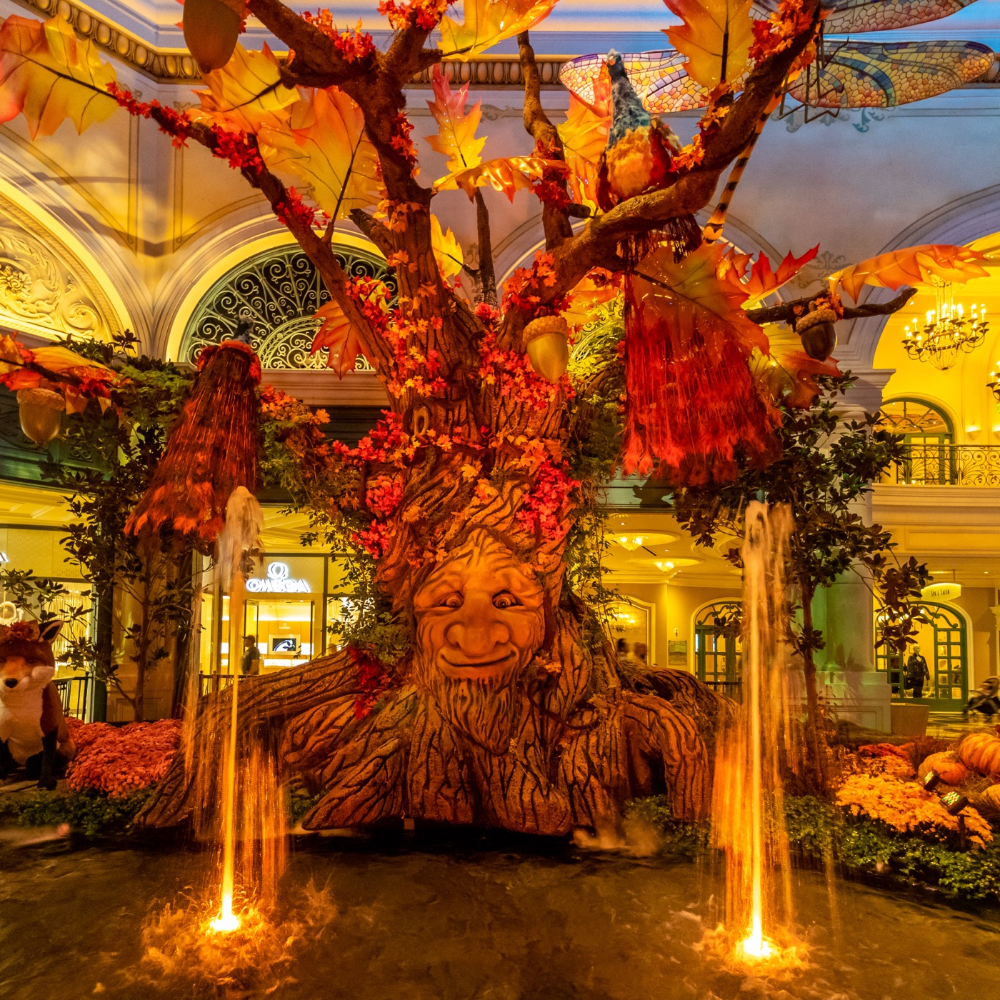

当日深度分时段行程与图文百科
清晨满油出发 ➔ 东门进入死亡谷国家公园
🚗 避暑出行准则：备好车内饮水与干粮，早上 7:00 准时满油出发。经帕伦普 (Pahrump) 沿 NV-160 与 CA-190 由东门平稳驶入 死亡谷国家公园 (Death Valley National Park)。
核心景点车游：扎布里斯基角 ➔ 恶水盆地 ➔ 艺术家车道（回程）
🌄 扎布里斯基角 (Zabriskie Point) (09:00 - 09:30)：下车沿平缓铺装坡道走 2 分钟，即可 360 度俯瞰金黄色的褶皱千沟万壑，拍照视野极其震撼。
✨【可选项目：炉溪游客中心 (Furnace Creek)】(09:45 - 10:15)：全空调室内避暑、国家公园集章与著名的室外实时温度大屏幕合影（年票免费）。
🧂 恶水盆地 (Badwater Basin) (10:45 - 11:15)：沿恶水路 (Badwater Road) 一路南下约 30 分钟抵达。北美地势最低点（海平面以下 86 米）。出车门即是平坦白色结晶盐滩，在边缘平地慢步留影，饱览盐白大地的苍茫壮阔。
🎨 艺术家车道 (Artist's Drive & Palette) (11:25 - 12:00)：这是一条由南向北的单行道，只能在回程时驶入。从恶水盆地往北开约 8 英里，右转进入全长 9 英里的景观公路，坐在空调车内穿梭于矿物质氧化形成的五彩火山岩丘中，在“艺术家调色板”停车 5 分钟下车拍照，出口回到炉溪附近。

地质百科：死亡谷的五彩矿物与极干旱成因 (点击展开)
🎨 艺术家调色板的成因：山崖上绚烂的粉色、紫色、青色与黄色源于火山灰沉淀中的多种金属矿物在热液与空气中氧化——铁化合物呈现粉红与暗红，云母分解呈现绿色，锰化合物呈现紫色，天然造就了如油画般的彩色丘陵。
🧂 恶水盆地为什么叫“恶水”：早期测绘员的骡子拒绝饮用这里的盐水，故得名 Badwater。这里是远古曼利湖 (Lake Manly) 蒸发后的沉积盐层，结晶盐层厚度可达上百米，形成的六边形盐壳是地球上最独特的干旱景观之一。
出园返程 ➔ 回酒店冲澡休息
🚗 返程：艺术家车道出口回到炉溪后，12:00 沿 CA-190 向东出园，经帕伦普 (Pahrump) 驱车约 2 小时返回，避开死亡谷午后的高温。路上用干粮、水果简单垫一下，14:00 左右回到酒店冲澡休息。
凯撒皇宫自助餐 (Caesars Bacchanal Buffet) 17:00
🚖 第 1 趟打车：16:30 从酒店打车前往 凯撒皇宫 (Caesars Palace)。
🍽️ 自助餐：17:00 的预订是排队号 (Line Pass)，到店后一般 30 分钟内入座，用餐限时 90 分钟，最晚约 19:30 前结束。死亡谷回来正好饿了，可以放开吃。
【可选】百乐宫秋季花园 ➔ 百乐宫喷泉 ➔ 打车回酒店

🚶 顺路往南：饭后从凯撒皇宫沿大道往南步行去 百乐宫 (Bellagio)，路线单向，不折返。
🌸 秋季花园 (Conservatory & Botanical Gardens)：免费，24 小时开放，逛 15~30 分钟。据报道，今年秋季展 9 月 18 日开始、11 月 7 日结束，主题是“怀旧秋日小屋”：木头雕刻的熊、鹿和苍鹭，新英格兰风格的木屋，还有一个约 687 磅的大南瓜。
⛲ 百乐宫喷泉 (Fountains of Bellagio)：周二 15:00~19:30 每 30 分钟一场，20:00 起每 15 分钟一场，可赶 20:00 那场。
🚖 第 2 趟打车：20:30 打车返回酒店，早点收拾行李，21:30 前休息。明天 08:00 出发，是全程车程最长的一天。
- 离线地图 (Offline Maps)：死亡谷全域无手机网络信号，出发前在酒店 Wi-Fi 下下载好 Google Maps 离线地图。
- 加满油箱：离开拉斯维加斯或在帕伦普镇加满油箱，绝不在谷内压低油表。
- 足量饮水：全家随车携带整箱瓶装水，随渴随喝，防范高温脱水。